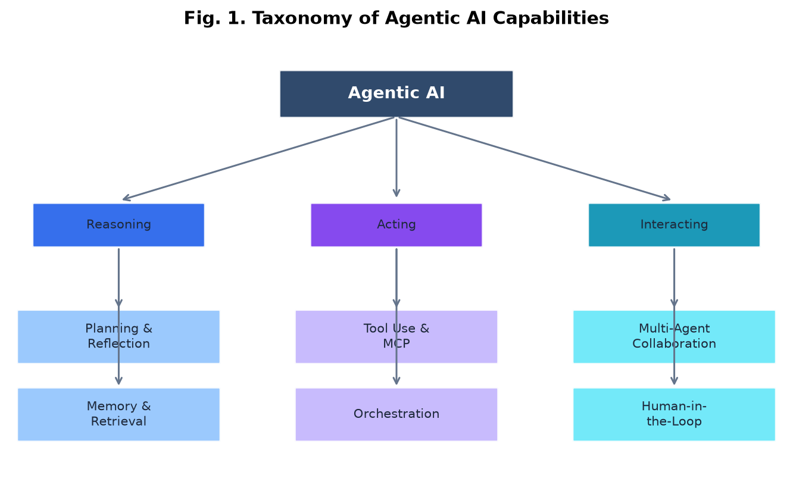
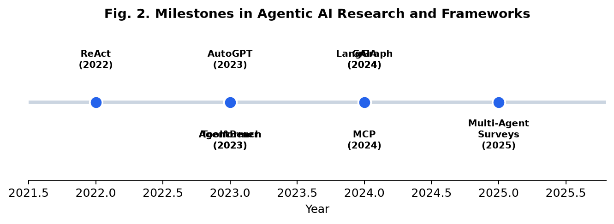

Agentic Artificial Intelligence
Agentic AI extends large language models with autonomy — the ability to
perceive, reason, plan, use tools, and act over multiple steps to achieve goals.
This page is your companion to the IEEE literature review in ai.docx.
The Agent Control Loop
Every agentic system follows a closed-loop cycle. Understanding this loop is the foundation for reading any paper or framework.
Repeat until goal achieved or max steps reached

Key Concepts
LLM as Controller
The language model serves as the "brain" — deciding what to do next based on context and observations.
CoreTool Use
Agents call APIs, run code, search the web, or query databases. Tools extend what the LLM can do beyond text.
ActingMemory
Short-term (conversation context) and long-term (vector stores, knowledge graphs) memory enable multi-session tasks.
ReasoningPlanning
Goal decomposition breaks complex tasks into sub-tasks. Hierarchical planners manage long-horizon objectives.
ReasoningReflection
Agents evaluate their own outputs and revise strategy — Reflexion and Self-Refine are key paradigms.
ReasoningMulti-Agent
Multiple specialized agents collaborate — planner, coder, critic roles in frameworks like AutoGen and CrewAI.
InteractingFoundational Paradigms
| Paradigm | Year | Key Idea | Paper |
|---|---|---|---|
| ReAct | 2022 | Interleave reasoning traces with actions | arXiv:2210.03629 |
| Toolformer | 2023 | Self-supervised tool learning | arXiv:2302.04761 |
| Reflexion | 2023 | Verbal reinforcement from failures | arXiv:2303.11366 |
| AutoGPT | 2023 | Fully autonomous goal-driven loops | GitHub |
| Chain-of-Thought | 2022 | Step-by-step reasoning (precursor) | arXiv:2201.11903 |

Frameworks & Libraries
LangGraph
State-graph orchestration for controllable agent workflows. Production-focused.
DocumentationEvaluation Benchmarks
| Benchmark | What It Tests | Link |
|---|---|---|
| AgentBench | LLMs as agents across 8 environments | Paper |
| GAIA | General AI assistants — tool use + reasoning | Paper |
| SWE-bench | Real GitHub issue resolution | Website |
| τ-bench | Tool-agent-user interaction | Paper |
| WebArena | Web browsing agents | Website |
| Agent-SafetyBench | Safety of LLM agents | Paper |
Must-Read Foundational Papers
Start with these five papers to build intuition before diving into surveys.
- ReAct — Yao et al., 2022. The paper that defined the think→act→observe loop.
- Toolformer — Schick et al., 2023. Language models teaching themselves to use tools.
- Reflexion — Shinn et al., 2023. Verbal reinforcement learning for agents.
- AgentBench — Liu et al., 2024. How to evaluate LLMs as agents.
- GAIA — Mialon et al., 2024. Benchmark for general AI assistants.
Comprehensive Survey Papers
LLM-Based Autonomous Agents
Wang et al. — Unified framework, applications, evaluation. Frontiers of CS, 2024.
arXiv:2308.11432Agentic AI — IEEE Access
Pati — Technologies, applications, societal implications. IEEE Access, 2025.
IEEE XploreArchitectures & Taxonomies
Guo et al. — POMDP control loop, multi-agent frameworks. 2026.
arXiv:2601.12560LLM Reasoning → Agents
Wang et al. — Benchmarks, frameworks, protocols (MCP, A2A). 2025.
arXiv:2504.19678Agentic AI: Age of Reasoning
ScienceDirect review — Patterns, types, environments. 2025.
ScienceDirectRecommended Learning Path
Read about GPT, prompting, chain-of-thought. Know what an LLM can and cannot do natively.
This is the conceptual foundation. Understand the interleaved thought-action-observation loop.
Use LangChain or smolagents to create a tool-calling agent. Experience the loop firsthand.
Get the big picture: construction, applications, evaluation strategies.
Try AutoGen or CrewAI. Read Chen et al. multi-agent survey (IJCAI 2024).
Run AgentBench or GAIA examples. Understand why model-centric eval is insufficient.
Synthesize everything with the literature review in ai.docx.
Glossary
- Agentic AI
- AI systems that autonomously pursue goals through perception, reasoning, planning, and action over multiple steps.
- ReAct
- Reasoning + Acting paradigm that interleaves chain-of-thought with tool/environment interactions.
- RAG
- Retrieval-Augmented Generation — fetching external documents to ground LLM responses.
- MCP
- Model Context Protocol — open standard for connecting LLMs to tools and data sources.
- POMDP
- Partially Observable Markov Decision Process — formal framework for agent-environment interaction.
- Scaffold
- The fixed agent architecture (e.g., ReAct loop) used during evaluation to isolate model capability.
- Tool Calling
- LLM outputting structured function calls that an runtime executes and returns results for.
- Hallucination
- LLM generating plausible but incorrect information — amplified when agents act on false beliefs.
Tools, Protocols & Repositories
- Model Context Protocol (MCP) — Tool connectivity standard
- LLM-Agent-Survey — Curated paper repository (Wang et al.)
- MASEval — Multi-agent system evaluation framework
- Stanford AI Index 2025 — Annual AI trends report
- DeepLearning.AI — AI Agents in LangGraph — Free short course
- HuggingFace Agents Course — Hands-on agent development
Your IEEE Literature Review
The companion document ai.docx in this folder contains a full IEEE-formatted literature review covering all topics on this page in academic prose with 29 references, tables, and figures.
📄 Open ai.docx